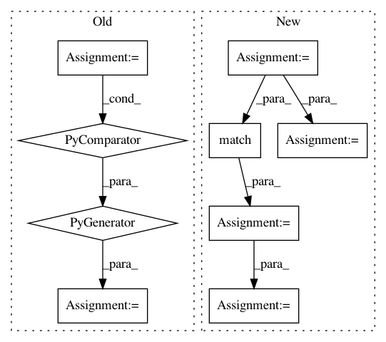

942f284052b22214d830c1bc2c8de03bffaa8d07,build_tools/azure/render_meta.py,,,#,8
Before Change
// We build from source on windows, otherwise, we looks for a wheel
if sys.platform != "win32":
wheel = next(file for file in os.listdir(str(DIST_PATH.resolve()))
if file.endswith(".whl"))
else:
wheel = None
// Numpy version is used for building
After Change
requirements = []
with open(str(REQUIREMENTS_FILE.resolve())) as file:
for line in file:
requirement = line.strip()
match = re.match(r"^([A-Za-z\-0-9]+)", requirement)
_, match_end = match.span()
package = match.group(0)
version = requirement[match_end:].replace("==", "")
requirements.append(f"{package} {version}")
// Render and write the meta.yaml file to $ROOT/conda/meta.yaml
context = {
In pattern: SUPERPATTERN
Frequency: 3
Non-data size: 9
Instances
Project Name: tgsmith61591/pmdarima
Commit Name: 942f284052b22214d830c1bc2c8de03bffaa8d07
Time: 2020-02-18
Author: aaronreidsmith@gmail.com
File Name: build_tools/azure/render_meta.py
Class Name:
Method Name:
Project Name: has2k1/plotnine
Commit Name: 44682f54140e61f260878ad2d2703eecba91e1e9
Time: 2015-04-20
Author: has2k1@gmail.com
File Name: ggplot/facets/locate.py
Class Name:
Method Name: locate_wrap
Project Name: has2k1/plotnine
Commit Name: 44682f54140e61f260878ad2d2703eecba91e1e9
Time: 2015-04-20
Author: has2k1@gmail.com
File Name: ggplot/facets/locate.py
Class Name:
Method Name: locate_grid